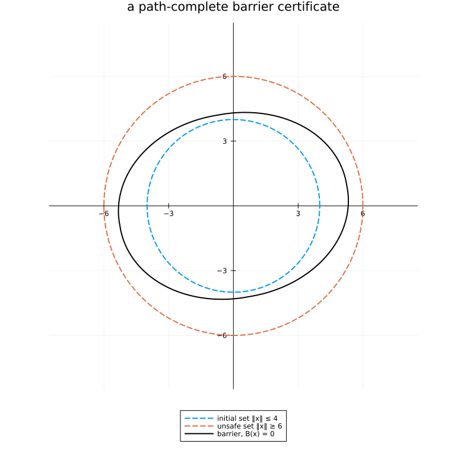

Safety: drawing the barrier
The same certificate as safety.jl, drawn. The point of the picture is that the barrier's zero set is a genuine invariant region — it contains the initial set, it excludes the unsafe set, and no trajectory can leave it under either mode.
import PathCompleteCertificates as PCC
import Clarabel
using Plots
const OPTIMIZER = Clarabel.Optimizer
A = [[0.7 0.77; -0.49 0.84], [0.7 0.77; -0.49 0.56]]
INITIAL_RADIUS = 4.0
UNSAFE_RADIUS = 6.06.0Both sets in homogeneous coordinates: $\{x : [x; 1]^\top S [x; 1] \ge 0\}$.
S0 = [-1.0 0.0 0.0; 0.0 -1.0 0.0; 0.0 0.0 INITIAL_RADIUS^2]
Su = [1.0 0.0 0.0; 0.0 1.0 0.0; 0.0 0.0 -UNSAFE_RADIUS^2]
problem = PCC.SafetyProblem(PCC.switched_system(A), S0, Su)
graph = PCC.de_bruijn(1, 2)
certificate = PCC.certify(PCC.QuadraticTemplate(), graph, problem; optimizer = OPTIMIZER)
PCC.is_feasible(certificate) || error("no barrier found")
certificate.margin0.0070666737141039425Drawing it
The barrier is affine-quadratic, not homogeneous, so its zero set is not star-shaped and the radius trick of two_axes.jl does not apply. A contour on a grid is the honest way to draw it.
circle(radius) = (
radius .* cos.(range(0, 2pi; length = 400)),
radius .* sin.(range(0, 2pi; length = 400)),
)
figure = plot(;
aspect_ratio = :equal,
legend = :outerbottom,
framestyle = :origin,
title = "a path-complete barrier certificate",
size = (760, 780),
)
plot!(figure, circle(INITIAL_RADIUS)...; lw = 2, ls = :dash, label = "initial set ‖x‖ ≤ 4")
plot!(figure, circle(UNSAFE_RADIUS)...; lw = 2, ls = :dash, label = "unsafe set ‖x‖ ≥ 6")
grid = range(-8, 8; length = 400)
values = [certificate([x, y]) for y in grid, x in grid]
contour!(
figure,
grid,
grid,
values;
levels = [0.0],
lw = 2,
linecolor = :black,
colorbar = false,
)
# `contour!` adds no legend entry of its own.
plot!(figure, [NaN], [NaN]; lw = 2, color = :black, label = "barrier, B(x) = 0")
figure
The solid curve is $\{x : B(x) = 0\}$, where $B$ is the common barrier the graph and template induce — certificate(x) evaluates it. $B < 0$ inside, so the region it encloses contains the initial set, is invariant under both modes, and never reaches the unsafe set.
That is a certificate, not a simulation and not a sampled check: the inequality holds for every state in the region and every mode, not for the trajectories that happened to be drawn.
Memory 2 gives the same barrier here — one mode of memory already suffices, so the graph axis buys nothing on this instance. It does on others; see two_axes.jl.
This page was generated using Literate.jl.